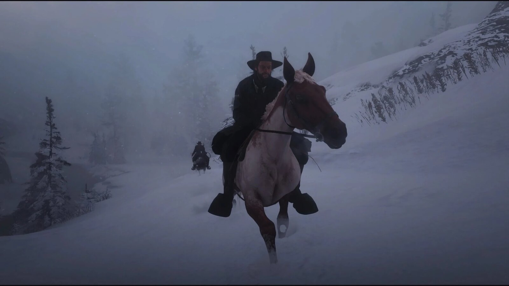
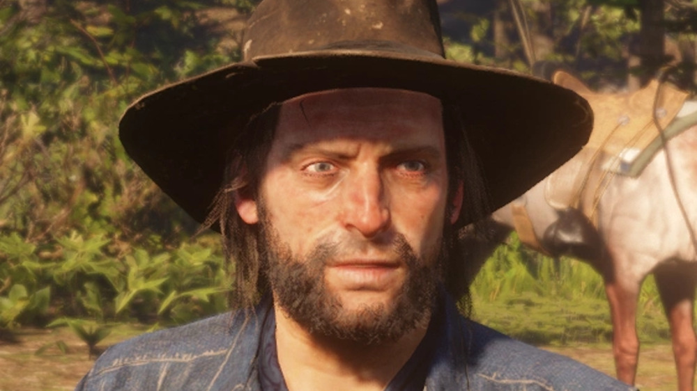
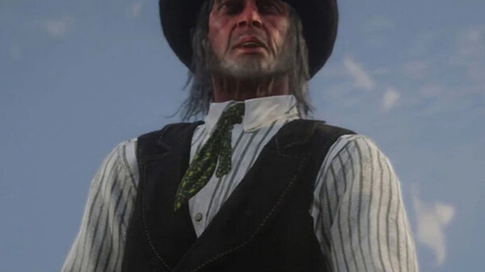
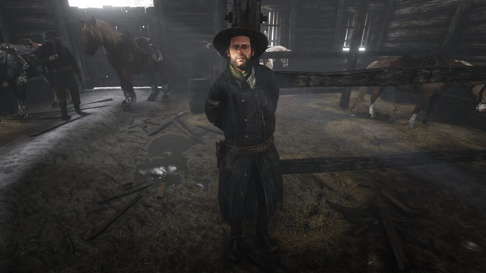

Character · Van der Linde gang
Kieran Duffy
Kieran Duffy is a former low-ranking member of the O'Driscoll Boys who joins the Van der Linde gang after being captured, in Red Dead Redemption 2.
He is murdered by the O'Driscolls in 1899, and his body is sent back to the gang's camp at Shady Belle.
- Died
- 1899
- Status
- Deceased
- Affiliation
- O'Driscoll Boys (former), Van der Linde gang
- Role
- Stable hand
- Voiced by
- Pico Alexander
- Games
- Red Dead Redemption 2
Biography
Prisoner
In chapter 1, in "Old Friends", the gang raids an O'Driscoll camp. Arthur chases Kieran down, ropes him and brings him back to the Colter camp as a prisoner. At Horseshoe Overlook, he is kept tied to a tree.
In chapter 2, in "Paying a Social Call", Dutch orders Bill to castrate him. Under the threat, Kieran reveals an O'Driscoll safehouse, Six Point Cabin, and leads Arthur, John and Bill there. Colm O'Driscoll is not there. When an O'Driscoll jumps Arthur at the door, Kieran shoots him and saves Arthur's life. Arthur then lets him join the gang.
In the gang
Kieran works with the horses at camp. According to the official guide, several members of the gang never fully accept him.
Death
In chapter 4, Kieran disappears. In "Horsemen, Apocalypses", his body rides into the Shady Belle camp on his horse: he has been beheaded and his eyes gouged out. The O'Driscolls attack the camp immediately afterwards. Dutch has him buried by Charles, Pearson and Reverend Swanson.
Relationships

Arthur Morgan
Captures him, then owes him his life at Six Point Cabin.

Bill Williamson
Ordered by Dutch to castrate him, before Kieran talks.

Colm O'Driscoll
The leader of the gang he leaves, and whose men kill him.

Dutch van der Linde
Has him interrogated, then buried.
Development and performance
Kieran is played by Pico Alexander, an American actor born in New York in 1991, who provided the voice and the motion capture.
Reception
In its December 2018 ranking of the gang's members, Game Informer placed Kieran 20th out of 24, noting "a lot of pathos in his struggle for acceptance", a journey "cut short just as everyone starts to warm up to him".
Gallery
